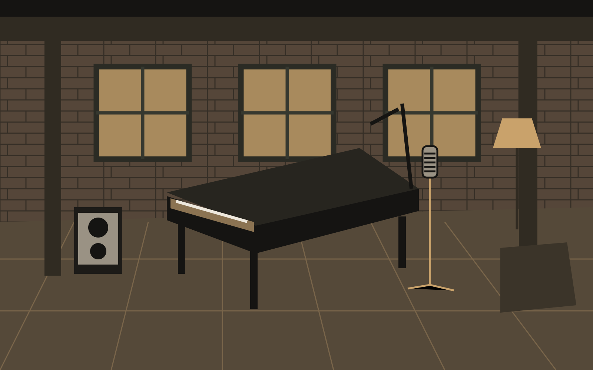
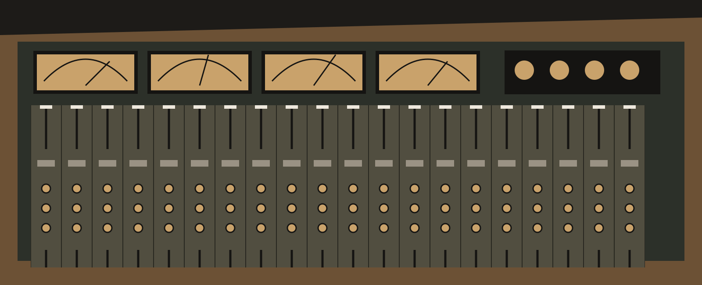

Tape still hears
it differently.
A two room studio in the east end of Glasgow, built around a 1974 desk and a live room with a proper ceiling.
The live room was a bottling hall before it was anything else, which is why the ceiling is nine metres and why a snare sounds the way it does in here. We kept the brick, added a floated floor and left the rest alone. Most of what arrives gets tracked live, four or five of you in the same space, looking at each other. It is a slower way to make a record and it tends to sound like people rather than files.
Illustrative studio portfolio. Original room drawings replace photographs. Gear, rates, artist credits and business facts are brief examples, not verified claims.
“We came for two days and stayed for five. Nobody once looked at a screen while we played.”
Sample rate card from the brief. Actual quotes and availability require confirmation.